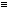

| (W W W W)(p, q) | Tautologie (Wenn p, so p; und wenn q so q.)
[p  p . q q] p . q q] |
| (F W W W)(p, q) | in Worten: Nicht beides p und q. [~(p . q)] |
| (W F W W)(p, q) | '' '' Wenn q, so p.
[q p] |
| (W W F W)(p, q) | '' '' Wenn p, so q.
[p q] |
| (W W W F)(p, q) | '' '' p oder q. [p v q] |
| (F F W W )(p, q) | '' '' Nicht q. [~q] |
| (F W F W)(p, q) | '' '' Nicht p. [~p] |
| (F W W F)(p, q) | '' '' p oder q, aber nicht beide. [p . ~q :v: q . ~p] |
| (W F F W)(p, q) | '' '' Wenn p, so q; und wenn q, so p. [p  q] |
| (W F W F)(p, q) | '' '' p |
| (W W F F)(p, q) | '' '' q |
| (F F F W)(p, q) | '' '' Weder p noch q. [p . ~q oder p | q] |
| (F F W F)(p, q) | '' '' p und nicht q. [p . ~q] |
| (F W F F)(p, q) | '' '' q und nicht p. [q . ~p] |
| (W F F F)(p, q) | '' '' p und q. [p . q] |
| (F F F F)(p, q) | Kontradiktion (p und nicht p; und q und nicht q.) [p . ~p . q . ~q] |
Diejenigen Wahrheitsmöglichkeiten seiner Wahrheitsargumente, welche den Satz bewahrheiten, will ich seine Wahrheitsgründe nennen.